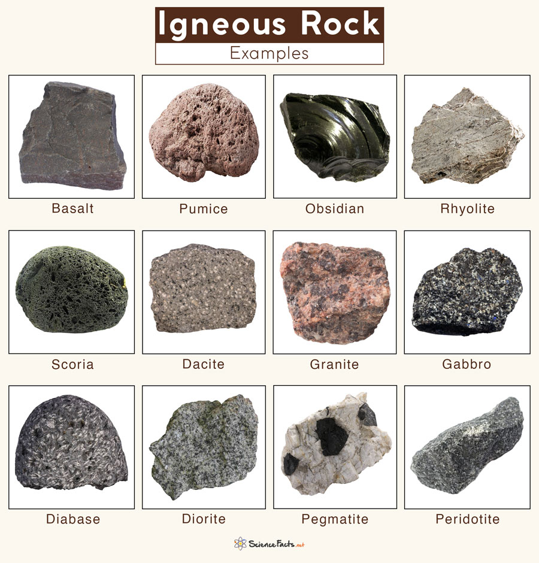
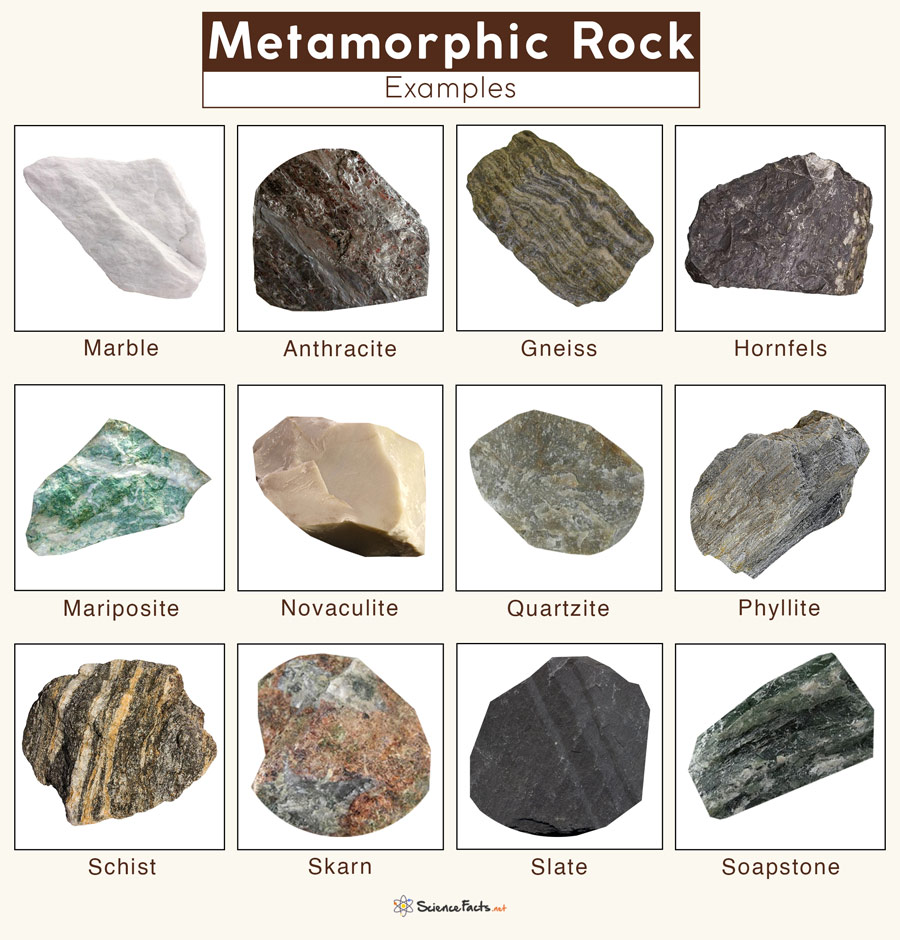
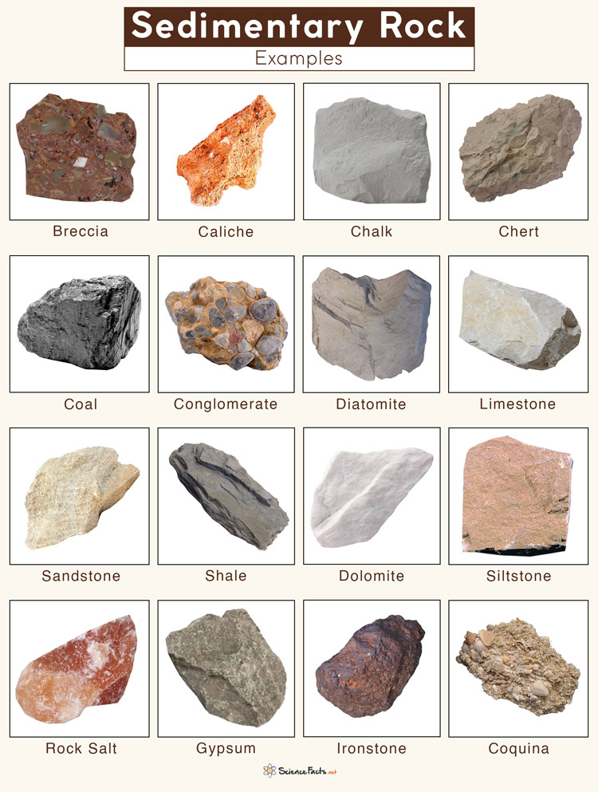

Igneous Rock
Igneous rocks (derived from the Latin word for fire) are formed when molten hot
material cools and solidifies. Igneous rocks can also be made a couple of
different ways. When they are formed inside of the earth, they are called
intrusive, or plutonic, igneous rocks. If they are formed outside or on top
of Earth’s crust, they are called extrusive, or volcanic, igneous rocks.
STONES
Type of Stones


Metamorphic Rocks
Metamorphic rocks are rocks that have been changed from their original form
by immense heat or pressure. Metamorphic rocks have two classes: foliated
and nonfoliated. When a rock with flat or elongated minerals is put under
immense pressure, the minerals line up in layers, creating foliation.

Sedimentary Rock
Sedimentary rocks are formed from pieces of other existing rock or organic material.
There are three different types of sedimentary rocks: clastic, organic (biological), and chemical.
Clastic sedimentary rocks, like sandstone, form from clasts, or pieces of other rock.
Organic sedimentary rocks, like coal, form from hard, biological materials like plants, shells,
and bones that are compressed into rock.